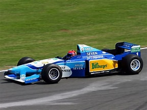

1995

Le più importanti scuderie che hanno partecipato al Campionato Mondiale di Formula 1 nel 1995 erano:
- Benetton
- Renault
- Forti
- Williams
Il Campionato Mondiale di Formula 1 del 1995 è stato vinto dalla scuderia Benetton dal pilota Michael Schumacher
HOME
Tutti i diritti sono riservati
Sito realizzato da Boniotti Elisa, Lucchini Davide, Tassone Thomas